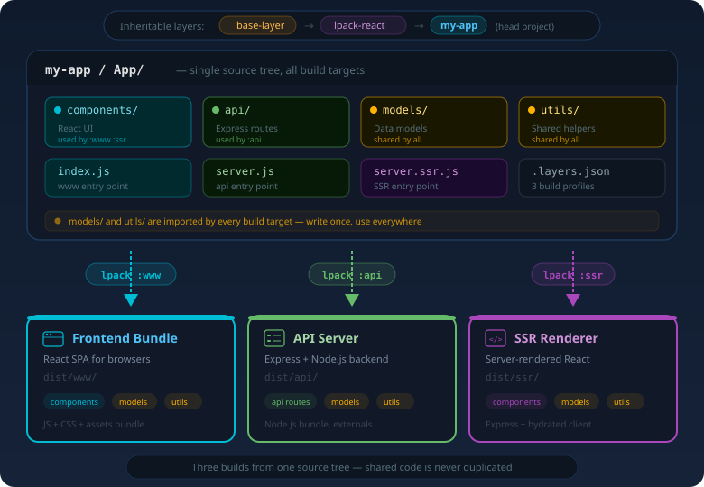

Stop copying webpack configs. Start inheriting them. layer-pack lets you compose reusable build layers like OOP inheritance — for your entire frontend stack.
Everything you need to create reusable, inheritable frontend architectures.
Extend parent layers like classes. Override what you need, inherit the rest. Shared webpack configs, source roots, and dependencies flow through the chain.
Import entire directory trees with a single line. import comps from 'App/ui/(**/*.jsx)' generates a virtual module that auto-exports everything matching the pattern.
Override a parent component and still access the original. import parent from '$super' resolves to the parent layer's version — like calling super() in OOP.
One project, many outputs. Define api, www, static profiles in .layers.json — each with its own webpack config, vars, and layer chain.
Import from App/components/Foo and layer-pack resolves it through all layer roots in priority order. Head project wins, parent layers provide fallbacks.
Use lpack-react for a production-ready stack: React 18, Webpack 5, Sass, Express SSR, HMR — all inheritable and overridable through layer-pack.
Create a .layers.json, write your entry file, and build.
{
"default": {
"rootFolder": "App",
"extend": ["lpack-react"],
"config": "./webpack.config.js",
"vars": {
"rootAlias": "App",
"devPort": 3000,
"project": "my-app"
}
},
"api": {
"basedOn": "default",
"config": "./webpack.config.api.js",
"vars": {
"targetDir": "dist/api"
}
}
}const layerPack = require('layer-pack');
const lPackCfg = layerPack.getConfig();
module.exports = [
{
entry : { App: lPackCfg.vars.rootAlias },
output : {
path: layerPack.getHeadRoot() + '/dist/'
},
plugins: [ layerPack.plugin() ],
module : {
rules: [{
test: /\.jsx?$/,
exclude: layerPack.isFileExcluded(),
use: 'babel-loader'
}]
}
}
];# Build the default profile
npx lpack
# Build the API profile
npx lpack :api
# Start dev server with HMR
npx lpack-dev-serverLayers form an inheritance chain. Each layer can extend parent layers, inheriting their configs, source roots, and dependencies. The head project always wins.

layer-pack solves real problems for teams and projects of all sizes.
Teams maintaining multiple apps can publish a base layer with shared webpack configs, babel presets, linting rules, and common components. Each app inherits and overrides only what it needs.
Monorepos with multiple frontends can share a common build layer. Each app lives in its own package, extends the shared layer, and builds independently with its own profiles.
Publish a complete, opinionated build layer as an npm package. Consumers inherit your entire stack — webpack config, loaders, presets — and can override any piece without ejecting.
Projects that need to produce a web frontend, an API server, and an SSR build from a shared codebase. Each target is a separate profile with its own webpack config and vars.
Install layer-pack and build your first inheritable layer in minutes.